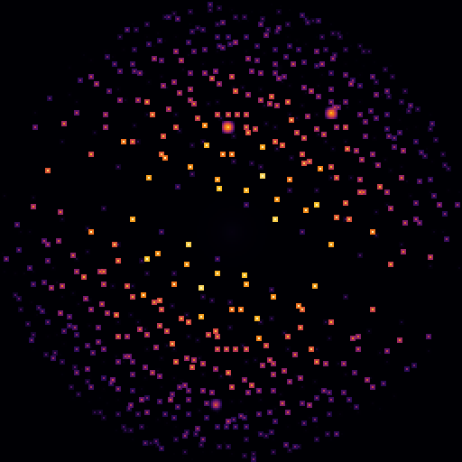
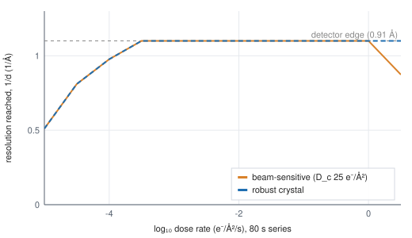
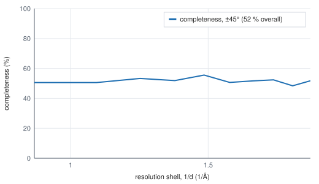
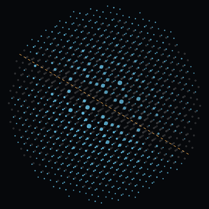

Record a rotation series from a nanocrystal (3D ED, MicroED), plan it against the crystal's dose budget, judge completeness shell by shell, turn the reciprocal lattice in 3D to see what was missed, and export the frames for DIALS or XDS.

SOP-07, version 1.0, November 2026 For students and new users of 3D ED, and for planning data collection Simulation only: nothing here controls a real microscope
Seeing with ElectronsTEM-view · Advanced-EM
SOP-07 3D electron diffractionScope and overview
Scope and overview
A single diffraction pattern samples only the reciprocal-lattice points on one slightly curved plane (the Ewald sphere). Rotating the crystal sweeps that plane through reciprocal space, so a series of frames over a tilt range Φ samples the 3D lattice. With Friedel symmetry only, a range Φ covers about Φ/180° of it; the rest is a missing cone around the rotation axis.
Collection
How
Good for
Continuous (cRED)
The stage rotates at constant speed while the camera reads frames
Speed and low dose; each frame integrates a wedge
Stepwise stills
Tilt, stop, expose, repeat
Simple stages; gaps between the steps
Precession stills (PEDT)
Stills with a precessing beam (angle φ)
Fills the gaps; more kinematical intensities
Steps
1
Choose the crystal and its orientation
2
Plan the dose
3
Set the collection
4
Collect; read completeness
5
Turn reciprocal space in 3D
6
Export to DIALS or XDS
Rules
Beam-sensitive crystals (MOFs, hybrid perovskites, proteins) tolerate a critical dose Dc. Plan the whole series inside it.
Completeness and ⟨I/σ⟩ are judged per resolution shell, not only overall.
A structure without a lattice (a molecule, a protein particle, amorphous material) gives diffuse scattering only: there is nothing to index.
Intensities are kinematical with a mosaic spread; dynamical effects are not modelled.
Seeing with Electrons · TEM-view2
SOP-07 3D electron diffractionSteps 1 and 2 of 6
Step 1
Choose the crystal and its orientation
In The specimen, choose a crystal (SrTiO₃, Au, Si, a perovskite, the MOF), or load your own structure as XYZ or CIF: its lattice is found from the atoms.
Set the starting orientation with the zone axis, or with Align to zone in the structure preview. Avoid starting on a low-index zone: the series then begins with many strong, dynamical reflections.
Select the 3D ED technique. The note under the controls names the lattice, the number of reflections and the resolution at the detector edge.
Step 2
Plan the dose
Read the critical dose in the 3D ED note, for example Dc ≈ 25 e⁻/Ų for MAPbBr₃ at room temperature. Cooling (liquid-nitrogen holder) raises it several-fold.
Set the Dose rate. The total dose is the dose rate × the series time; both are shown in the note.
Too little dose is counting-limited: weak high-angle reflections drown in noise. Too much destroys the crystal before the series ends (Fig. 1).
Result. A dose rate where the total dose is about the critical dose, or a little below. For a robust crystal, more dose never hurts.

Fig. 1. Resolution reached (median I/σ ≥ 2) against the dose rate, ±40° in 80 s: counting-limited on the left, damage-limited on the right for the beam-sensitive crystal. The plateau is the detector edge (0.91 Å), not the crystal.
Seeing with Electrons · TEM-view3
SOP-07 3D electron diffractionSteps 3 and 4 of 6
Step 3
Set the collection
Setting
Start at
Notes
Collection
Continuous (cRED)
Stepwise stills leave gaps; precession stills fill them
Tilt range: start, end
−40° to +40°
Wider range: more complete; check the holder's limit
Rotation speed, Frame rate
1–2 °/s, 4–10 fps
The wedge per frame = speed ÷ frame rate; keep it below ~0.5°
Rotation axis (in the image)
as calibrated
Needed by the processing software; written into the frame headers
Camera length
so the detector edge is past the expected resolution
The edge resolution is in the note
Merge equivalent reflections
Friedel pairs
Cubic Laue class merges more for cubic crystals
Step 4
Collect; read completeness
Select Collect the series. The main view plays the frames as the crystal turns, over a dim stack of every frame so far (the cover shows the stack after the series: the empty band is the missing cone); the dose and real time run underneath.
The right panel shows completeness and median I/σ per shell (Fig. 2) and a reciprocal-space layer (hk0, h0l or 0kl; choose the layer index).
Note the overall completeness and the resolution where median I/σ falls below 2.
Result. SrTiO₃ along [125], ±45°: 180 frames, 52 % complete overall (Friedel), to 0.58 Å. A wider range, or merging by the cubic Laue class, fills the rest.

Fig. 2. Completeness per resolution shell after the series.
Seeing with Electrons · TEM-view4
SOP-07 3D electron diffractionSteps 5 and 6 of 6
Step 5
Turn reciprocal space in 3D
Under Reciprocal space, select 3D · drag to turn. Every reflection appears in 3D: recorded ones filled and sized by their counts, unrecorded ones hollow. The dashed line is the rotation axis.
Drag on the right panel, or use Turn about the vertical and Turn about the horizontal.
Turn until you look along the rotation axis. The missing cone shows as an empty double wedge; its opening is 180° minus the tilt range.
Collect again with a wider range, or another start orientation, and compare.
Result. You can name the directions in reciprocal space the series did not reach, and choose the next crystal's orientation to cover them (merging several crystals is how incomplete data are completed in practice).
Note. Tomography has the same view: View → 3D · drag to turn turns the reconstructed volume (brightest voxel or sum along the view).

Fig. 3. Reciprocal space turned 30° and 20°: recorded reflections (blue), unrecorded (hollow), the rotation axis (dashed).
Step 6
Export to DIALS or XDS
Export frames (.img) writes SMV frames with headers (wavelength, camera length, oscillation start and range, rotation axis, exposure), ready for DIALS or XDS.
For a full-scale job, export the HPC bundle from Data, dose and compute; it records the parameters for the external package (SOP HPC-07).
Seeing with Electrons · TEM-view5
SOP-07 3D electron diffractionTroubleshooting and record
Troubleshooting
Symptom
Likely cause
Action
“3D ED needs a crystal”
Continuum specimen selected
Choose a crystal, or load an XYZ or CIF
Diffuse frames, nothing to index
No lattice in the structure (molecule, protein particle, amorphous)
Expected; use a crystal for indexing
High-angle shells fade late in the series
Dose past Dc
Lower the dose rate, shorten the range, or cool the crystal
Every shell noisy
Counting-limited
Raise the dose rate within the budget
Completeness stuck near Φ/180°
Missing cone
Wider range; merge crystals in other orientations
Gaps between frames
Stepwise stills
Continuous rotation, or precession stills
Record
Item
Value or criterion
Initials
Crystal and start orientation
__________ ; zone [ ___ ]
Dose plan
Dc ____ e⁻/Ų; total ____ e⁻/Ų
Collection
Method ____ ; range ____ ° to ____ °; wedge ____ °
Result
Completeness ____ %; d (median I/σ ≥ 2) ____ Å
Missing cone checked in 3D
Next orientation ____
Frames exported
Folder ____________
Seeing with Electrons · TEM-view6
Open 3D ED
The link opens TEM-view on the SrTiO₃ crystal in the 3D ED technique. Select Collect the series.
3D ED on SrTiO₃
Works on a tablet; a computer is easier for turning reciprocal space.
Software
DIALS (dials.github.io) and XDS read the exported SMV frames.
Related procedures
SOP-06 Single-particle cryo-EM. SOP-05 In situ. HPC-07 for external packages.
Methods
Continuous rotation, stepwise and precession-assisted (PEDT) collection.
SOP-07 3D electron diffraction, version 1.0, November 2026 Simulation only. Nothing here controls a real microscope. Results from the simulator are not measurements of a real specimen.